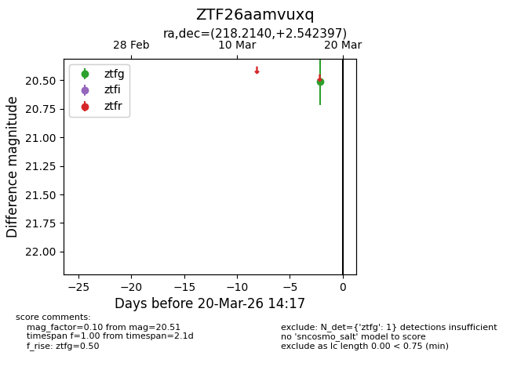
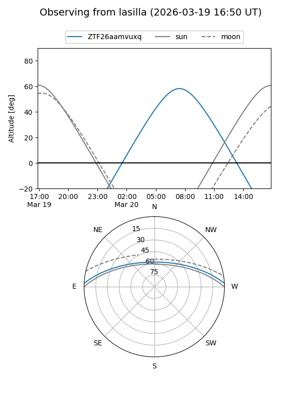
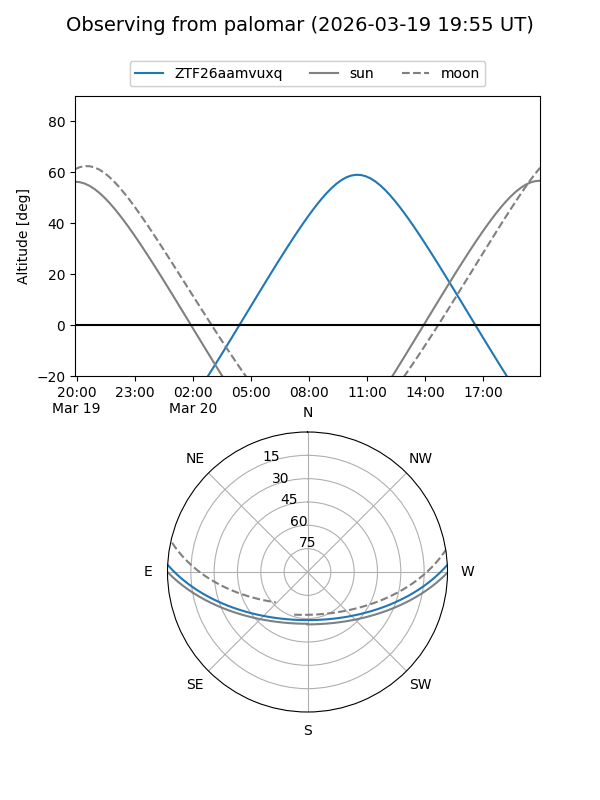

ZTF26aamvuxq
Target ZTF26aamvuxq at 2026-03-20 14:19
Aliases and brokers:
FINK: link
Lasair: link
ALeRCE: link
alt names
ZTF26aamvuxq (ztf,fink_ztf)
Coordinates:
equatorial (ra, dec) = 218.2140,+2.54240
equatorial (HMS+DMS) = 14:32:51.36,+02:32:32.63
galactic (l, b) = (351.9091,+55.45645)
Flags:
Photometry:
last ztfg=20.51
1 ztfg detections
Lightcurve

Visibility


Additional plots